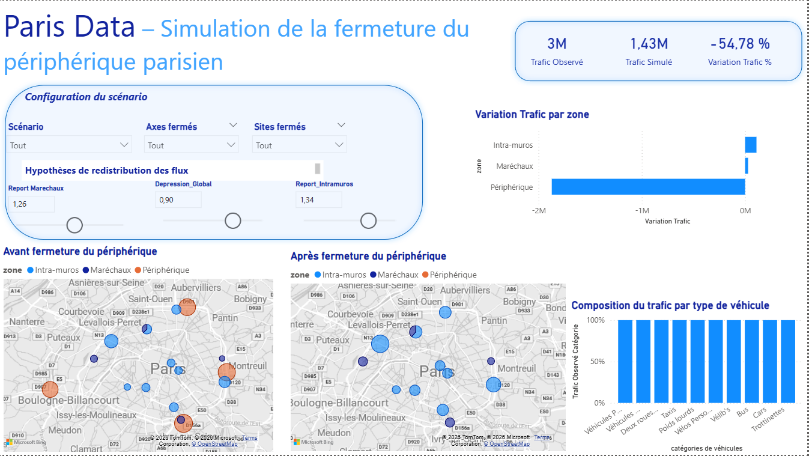

Featured

PariData — Modélisation prédictive sur données urbaines ouvertes
Projet de valorisation de données Open Data dans un contexte Smart City, visant à structurer un pipeline analytique complet et explorer la faisabilité d'une modélisation prédictive.
Problématique : Comment exploiter des jeux de données urbaines hétérogènes pour produire des indicateurs décisionnels fiables et explorer une approche prédictive ?
Power BI
SQL
Python / pandas
scikit-learn
Open Data